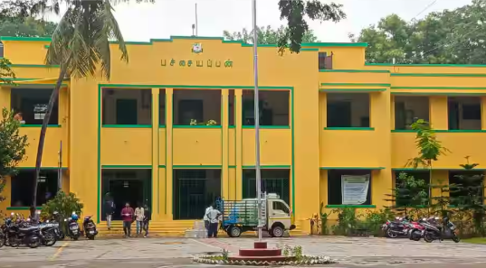

Pachaiyappa's College for Men in Kanchipuram is a well-established, government-aided institution founded in 1950 and affiliated with the University of Madras. Spread over a 68-acre campus along the Vegavathi River, the college offers a wide range of academic programs including undergraduate, postgraduate, and research courses in disciplines such as arts, science, commerce, and computer applications. It boasts modern facilities like advanced laboratories, a well-stocked library, computer centers, and sports amenities. The college also encourages student engagement through extracurricular activities including NCC, NSS, and various social service programs.